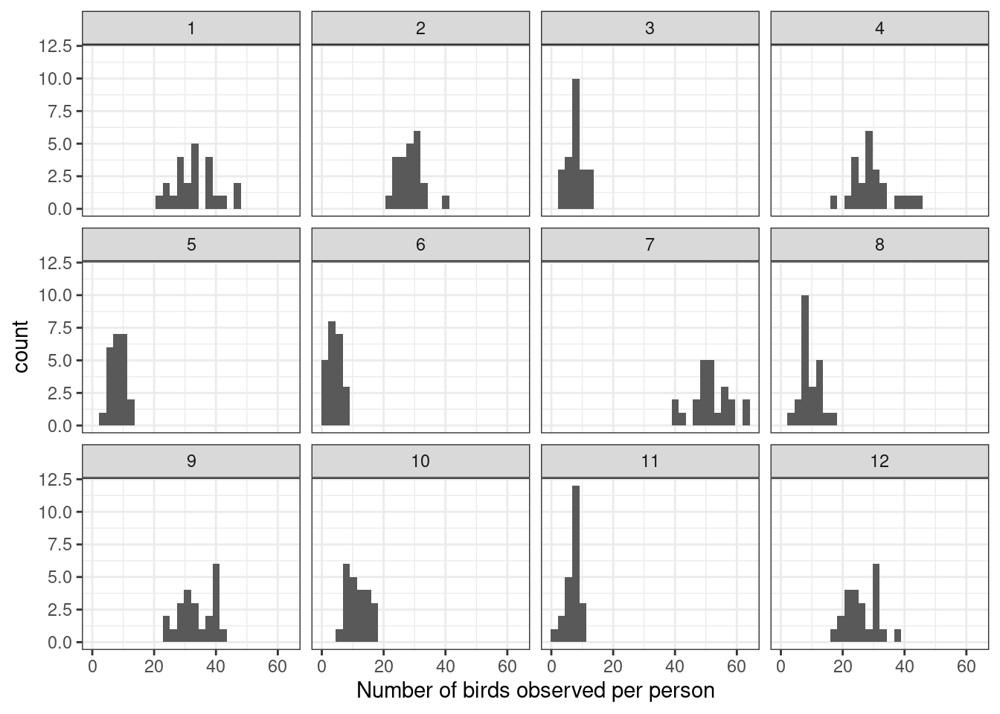
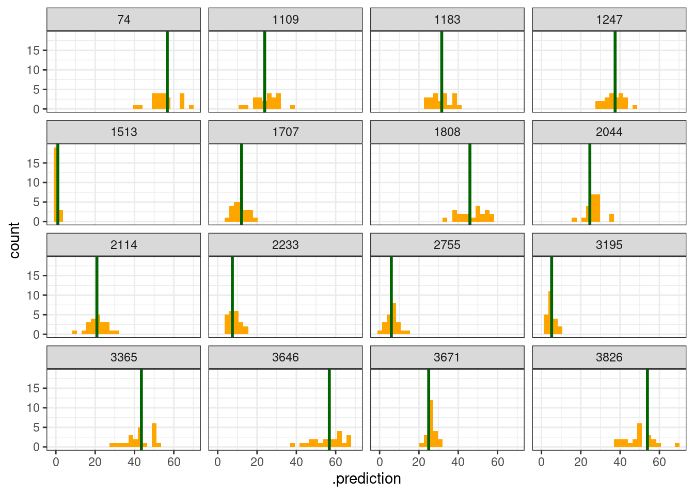
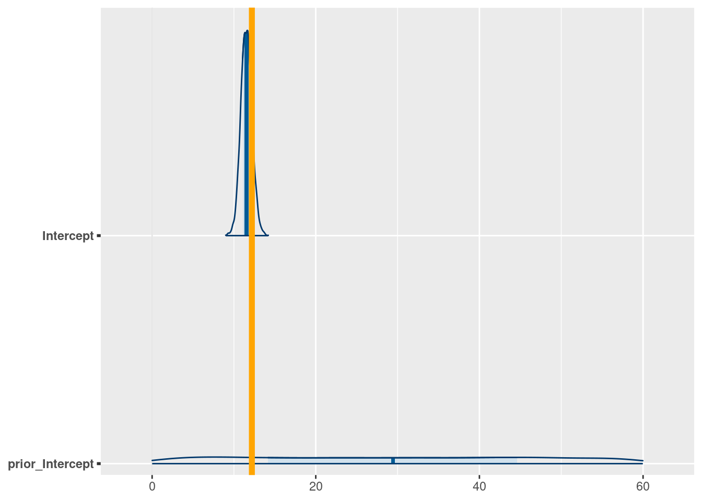

library(tidyverse)
library(rstan)
rstan_options("auto_write" = TRUE)Introduction to brms and Bayesian workflow
simulating, checking and understanding a simple model.
Goals of this lesson
- Introduce the idea of a generative model
- Using generated data to validate a model
- Stan model syntax
- Outline of a Bayesian workflow
The process
To practice our first model, we’ll being with an imaginary example. We’ll imagine we’re conducting a particularly pleasant study: counting birds!
Question How many birds will each person in the class find? For the purposes of this example, let’s say there are 22 people.
- We’re going to count birds, so we’ll have count data: a number that is either 0 or some positive, round number
- We’ll make a simplifying assumption: everybody has the same chance of seeing a bird (i.e. no differences in skill or equipment), and everyone in the class is an independent observer (i.e. nobody is working in pairs, etc.)
- Everyone in the class makes only one count, so we have 22 numbers.
We’re Bayesian, so we need to write a probability distribution for all the possible values.
\[ \begin{align} \text{Number of Birds}_{\text{seen by person i}} &\sim \text{Poisson}(\lambda) \\ \lambda &\sim \text{Uniform}(0, 60) \end{align} \]
A quick note about notation for models like these:
- We use a subscript \(i\) to indicate the “label” for each observation in our dataset. You can think of this as the row number of the data spreadsheet, and imagine sliding your finger down the column of measurements, modelling each value in turn.
- Usually we’ll use more general language, such as \(y_i\). But for this simple example I wanted to make things as explicit as possible.
- Notice the symbol \(\sim\). This is read as “distributed as”, and indicates the probability distribution from which the values might come. When the values we’re talking about are data that we can observe (in this case, counts of birds), we call the distribution the likelihood. When the value is something we can’t observe (in this case, the average count \(\lambda\)) we call the distribution the prior.
Warning
We’ll be talking about better ways to model count data in a later exercise! For now, I’m using the Uniform distribution for simplicity. It’s not usually a very good choice!
Simulation in R
Before starting work on real data, we are going to begin by learning how to generate data by simulation. There are at least three reasons why this is a good idea:
- Understand your priors.. For most interesting models in ecology, you will not be able to pick good numbers for your prior parameters just by thinking hard. Should the prior on annual tree growth be \(\text{Normal}(2, 1)\) ? Or should the standard deviation be bigger? Smaller? As we’ll see, simulation will demystify the process.
- Validate your model. Bayesian models are great because they can create datasets by simulation. This suggests a very minimum requirement we might have for a statistical model: use known parameters and a model to generate data, then fit that same model to the very data it generated, and see if we get back something close to those known parameter values.
- Test your understanding. Perhaps most importantly, simulation helps you to test your own intuition. If you can simulate data from your model, then you really understand it! If you can’t, then you don’t know quite how it works yet. It’s rare1 that a biologist will fail to learn something by simulating a dataset.
Simple exercise in simulation
Let’s imagine we are taking a walk as a group today at this beautiful field site. What is the number of birds (total abundance of ALL species) each of us is going to see on our hike?
Some questions to ask about simulated data
- What kind of observations are you going to make? Do they have a minimum or maximum value? Are they integers, or are they decimal numbers, or something else?
- Where do the numbers come from? This could be anything, from simple linear approximations (i.e. the models we’re looking at in this course) to ODEs, mathematical models, GAMs, etc.
- How many observations will we be making?
One of the most useful traits of Bayesian models is that they are generative: they can be used to make a simulated dataset. We’ll do that now for our bird example.
let’s simulate from a Poisson distribution:
set.seed(525600)
n_people <- 21
avg_birds_per_person <- runif(1, min = 0, max = 30)
bird_count <- rpois(n_people, lambda = avg_birds_per_person)Some things to note in the code above:
Every statistical distribution that is in R (which is a lot! almost all! ) has four different functions. If the distribution is called dist, then they are:
rdist= draw random numbers fromdistqdist= the quantile function – what value gives a certain proportion of the distribution?pdist= the probability density function – what proportion of the distribution is below a certain value?ddistthe density function = draws the “shape” of a distribution. How probable are specific values?
The other thing to note is that there are TWO simulation steps here: first, simulating a value of the average (\(\lambda\)) and second, simulating observations. In our model, the Uniform distribution was referred to as the prior, and the Poisson distribution was referred to as a likelihood, but here you can see that they are very nearly the same thing: just statements about what distribution of values might be most consistent with the data.
Plotting the result
Let’s take a look at our simulated values:
hist(bird_count, col = "lightblue", xlim = c(0, 50))
This is pretty great, and represents one possible realization of sampling. However, one sample isn’t enough to tell us about what our \(\text{Uniform}(0, 60)\) prior really means.
EXERCISE
Try to make many different simulations (say, 12 simulations). This represents 12 different repeats of the whole process: draw a value from the uniform prior, THEN draw a value from the poisson. Visualize them any way you want! (the worked example below uses ggplot2)
SOLUTION
set.seed(525600)
simulate_some_birds <- function() {
lambda <- runif(1, min = 0, max = 60)
tibble(birds_seen = rpois(23, lambda = lambda),
lambda = lambda)
}
bird_simulations <- purrr::map(1:12, function(x) simulate_some_birds()) |>
list_rbind(names_to = "simulation_id")
bird_simulations |>
ggplot(aes(x = birds_seen)) +
geom_histogram(bins = 28) +
facet_wrap(~simulation_id) +
theme_bw() +
labs(x = "Number of birds observed per person")
This figure shows different simulations of what, according to our prior, might be reasonable datasets for us to study. Do any of them seem implausible to you? If so, try changing the prior. The goal is to make fake datasets that seem plausible, but which still include the possibility of some surprising observations.
When you have a prior that generates observations that cover a range of scientifically reasonable values, then you are ready to move on to fitting real data.
However before we actually do that, let’s do the whole thing again: this time using brms
Simulating data in brms
Let’s look back at the equation:
\[ \begin{align} \text{Number of Birds}_{\text{seen by person i}} &\sim \text{Poisson}(\lambda) \\ \lambda &\sim \text{Uniform}(0, 60) \end{align} \]
And then translate it into brms:
library(brms)Loading required package: RcppLoading 'brms' package (version 2.23.0). Useful instructions
can be found by typing help('brms'). A more detailed introduction
to the package is available through vignette('brms_overview').
Attaching package: 'brms'The following object is masked from 'package:rstan':
looThe following object is masked from 'package:stats':
arbird_formula <- bf(birds_seen ~ 1, family = poisson(link = "identity"))
bird_data <- data.frame(
person_id = 1:22,
birds_seen = 0)
get_prior(bird_formula, data = bird_data)Intercept ~ student_t(3, 0, 2.5)bird_prior <- c(prior(uniform(0,60), class = "Intercept", lb = 0, ub = 60))
bird_model <- brm(formula = bird_formula,
data = bird_data,
prior = bird_prior,
sample_prior = "only",
file = here::here("topics/01_simulation/bird_model.rds"),
file_refit = "on_change")When you sample the model, as we’ll do later, Stan samples the posterior distribution using Hamiltonian Monte Carlo.
Before we run it, let’s look at the parts of the code above:
The model formula
bird_formula <- bf(birds_seen ~ 1, family = poisson())The model formula is an extension of the kind of syntax used in lme4. We can also specify the response distribution here, via the family arguement.
The prior
The prior is specified as a vector of special objects, created by the prior function. Note that the first argument to these functions is not R, but in fact actually a bit of Stan code.
When I work, I almost always use this pair of steps:
get_prior(bird_formula, data = bird_data)
bird_prior <- c(prior(uniform(0,60), class = "Intercept", lb = 0, ub = 60))The first step uses the formula and the dataset to print out a table of all the parameters in the model, and their default priors. I use this table as a reference during the second step, where I define my own priors for my model.
Always do these two steps!
Why does
get_prior require the dataset?
In Bayesian statistics, quantites are either unobserved or observed. Anything observed is called “data”, and anything unobserved is called a “parameter”. The design of brms tries to be very general and flexible; it looks for the names of objects from the formula in the dataset to see if they are observed quantities or parameters.
Sampling a prior in brms
When we run brm(bird_formula, data = bird_data, prior = bird_prior, sample_prior = "only"), we sample only from the prior. This generates a large number of simulated datasets – the default is 4000! Each time the model samples, it draws a new value for the unobserved average (avg_birds_per_person) and then 22 values for the number of birds seen by each person.
Let’s pull out just a few of these datasets and visualize them.
We’ll use a wonderful package called tidybayes to easily extract posterior draws from stanfit objects.
library(tidybayes)
Attaching package: 'tidybayes'The following objects are masked from 'package:brms':
dstudent_t, pstudent_t, qstudent_t, rstudent_ttidybayes::get_variables(bird_model) [1] "b_Intercept" "Intercept" "lprior" "lp__"
[5] "accept_stat__" "stepsize__" "treedepth__" "n_leapfrog__"
[9] "divergent__" "energy__" birds_intercepts <- tidybayes::spread_draws(bird_model, Intercept,
# ndraws = 20,
seed = 525600)
nrow(birds_intercepts)[1] 4000head(birds_intercepts)# A tibble: 6 × 4
.chain .iteration .draw Intercept
<int> <int> <int> <dbl>
1 1 1 1 38.9
2 1 2 2 40.2
3 1 3 3 40.0
4 1 4 4 35.0
5 1 5 5 9.84
6 1 6 6 35.7 bird_counts_simulated <- tidybayes::add_predicted_draws(
bird_data,
bird_model)
bird_counts_simulated |>
ungroup() |>
filter(.draw %in% sample(1:4000, replace = FALSE, size = 16)) |>
ggplot(aes(x = .prediction)) +
geom_dotplot() +
facet_wrap(~.draw)Bin width defaults to 1/30 of the range of the data. Pick better value with
`binwidth`.
Here we pass tidybayes::spread_draws() the model name, as well as the names of the parameters that we want to work with. The handy function tidyverse::get_variables is a key part of this workflow.
Let’s see what we get from tidybayes by looking at the first few rows.
bird_counts_simulated |>
as.data.frame() |>
head(9) |>
knitr::kable()| person_id | birds_seen | .row | .chain | .iteration | .draw | .prediction |
|---|---|---|---|---|---|---|
| 1 | 0 | 1 | NA | NA | 1 | 41 |
| 1 | 0 | 1 | NA | NA | 2 | 34 |
| 1 | 0 | 1 | NA | NA | 3 | 34 |
| 1 | 0 | 1 | NA | NA | 4 | 33 |
| 1 | 0 | 1 | NA | NA | 5 | 7 |
| 1 | 0 | 1 | NA | NA | 6 | 38 |
| 1 | 0 | 1 | NA | NA | 7 | 43 |
| 1 | 0 | 1 | NA | NA | 8 | 32 |
| 1 | 0 | 1 | NA | NA | 9 | 46 |
Remember we asked for only 25 of the 4000 posterior samples. Here is one sample, and just a bit of the next.
Let’s take a look at some of these simulations:
bird_counts_simulated |>
ungroup() |>
filter(.draw %in% sample(1:4000, replace = FALSE, size = 16)) |>
left_join(birds_intercepts, by = join_by(.draw)) |>
ggplot(aes(x = .prediction)) +
geom_histogram(fill = "orange") +
geom_vline(aes(xintercept = Intercept),
col = "darkgreen", lwd = 1) +
facet_wrap(~.draw) +
theme_bw()`stat_bin()` using `bins = 30`. Pick better value `binwidth`.
Parameter recovery
Let’s go back and look at the fake datasets we created in R
avg_birds_per_person[1] 17.12789bird_count [1] 23 10 19 27 20 15 16 18 18 22 14 14 14 18 17 13 26 19 16 13 10and let’s see if we can recapture the only known parameter, avg_birds_per_person, which is equal to 17.127887.
We’ll do it first in R, using the function fitdistr from the MASS package:
MASS::fitdistr(bird_count, dpois, start = list(lambda=10))Warning in stats::optim(x = c(23L, 10L, 19L, 27L, 20L, 15L, 16L, 18L, 18L, : one-dimensional optimization by Nelder-Mead is unreliable:
use "Brent" or optimize() directly lambda
17.2382812
( 0.9060239)This could also be done with glm
bird_glm <- glm(bird_count ~ 1, family = "poisson")
exp(coef(bird_glm))(Intercept)
17.2381 You can see that in all cases we are getting close to the value of avg_birds_per_person, which in these simulations is the true value.
Parameter recovery in brms – sampling the posterior
Time for the HMC Slides!
EXERCISE: parameter recovery in Stan
Use the Stan code above to fit the model to our simulated data. Do we recover the parameters? That is, rerun the example above but change the sample_prior argument to “yes”
Select one of our simulations to be the dataset for this analysis
one_bird_simulation <- bird_simulations |>
# select one simulation, could be any one
filter(simulation_id == 10)
SOLUTION
the brms syntax is only slightly changed! note the different filename and the different object name as well:
bird_posterior <- brm(formula = bird_formula,
data = one_bird_simulation,
prior = bird_prior,
sample_prior = "yes",
file = here::here("topics/01_simulation/bird_posterior.rds"),
file_refit = "on_change", refresh =0)
summary(bird_posterior) Family: poisson
Links: mu = identity
Formula: birds_seen ~ 1
Data: one_bird_simulation (Number of observations: 23)
Draws: 4 chains, each with iter = 2000; warmup = 1000; thin = 1;
total post-warmup draws = 4000
Regression Coefficients:
Estimate Est.Error l-95% CI u-95% CI Rhat Bulk_ESS Tail_ESS
Intercept 11.53 0.69 10.22 12.90 1.00 1358 2423
Draws were sampled using sampling(NUTS). For each parameter, Bulk_ESS
and Tail_ESS are effective sample size measures, and Rhat is the potential
scale reduction factor on split chains (at convergence, Rhat = 1).We can look at a table of coefficients but it is much easier to once again look at posterior samples as a figure.
Visualize everything!
Bayesian workflows are highly visual. Make as many plots as you can: of your parameters, your predictions, the performance of your chains, etc.
bayesplot
Another essential package for working with posterior samples is called bayesplot. Let’s use it to compare the posterior and prior distribution for the intercept.
tidybayes::get_variables(bird_posterior) [1] "b_Intercept" "Intercept" "prior_Intercept" "lprior"
[5] "lp__" "accept_stat__" "stepsize__" "treedepth__"
[9] "n_leapfrog__" "divergent__" "energy__" bayesplot::mcmc_areas(bird_posterior, pars = c("Intercept", "prior_Intercept")) +
geom_vline(xintercept = unique(one_bird_simulation$lambda), col = "orange", lwd = 2)
avg_birds_per_person. The orange line is the true parameter value, which we simulated in R.Posterior predictive checks
Bayesian models MAKE data, which suggests a clear way to validate our models: ask the model to make some data, then see how well these data correspond to biology (e.g. to our real data). Here, we will take 50 fake datasets of bird counts and compare them to the simulation we first did in R.
The process involves a bit of fiddling around in R to get the simulated data, but then bayesplot does all the work:
brms::pp_check(bird_posterior, type = "dens_overlay")Using 10 posterior draws for ppc type 'dens_overlay' by default.
Shinystan
shinystan::launch_shinystan(bird_posterior)Exercises
Level 1
- What would you do next to add complexity the bird-counting model above?
- We plotted histograms to evaluate our model. Experiment with other types of plots. For example, what is the maximum value in each posterior simulation? What is the minimum? How to these compare to the real data? TIP: check out
?ppc_stat.
Level 2
- Take a closer look at
poisson_model_samp$summary(). All the values ofbird_countare the same. That’s correct, but why? - Try to fit YOUR data and your chosen distribution from Monday’s exercise. Check to see if the distribution you chose is implemented in Stan – see, for example, this list.
- check the fit using the plots we have already seen today.
Level 3
- You would never actually do the analysis in this exercise! If all you want is the average of a Poisson distribution, you can get that without any sampling at all. Start by writing the model with a different prior:
\[ \begin{align} \text{Number of Birds}_{\text{seen by person i}} &\sim \text{Poisson}(\lambda) \\ \lambda &\sim \text{Gamma}(9, .5) \end{align} \]
This lets us calculate the posterior distribution directly. See the equation on Wikipedia and calculate the posterior for our bird data.
Footnotes
in Andrew’s experience anyway!↩︎